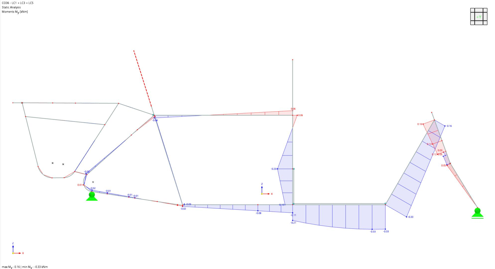
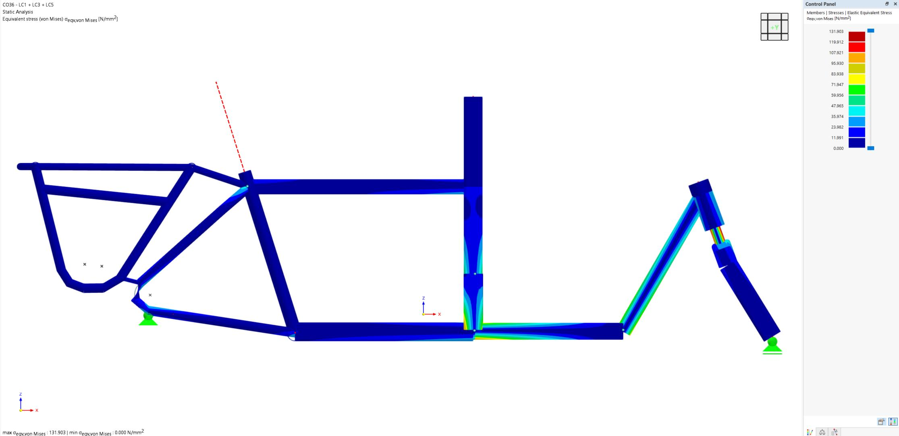

Vélo cargo proto SCHWEHHR
Contexte du projet
Le vélo cargo proto SCHWEHHR représente une innovation majeure dans le domaine de la mobilité urbaine. Ce projet vise à développer un vélo cargo électrique adapté aux besoins spécifiques des livraisons en milieu urbain.
Notre bureau a été impliqué dans la conception structurelle du châssis, en collaboration avec des experts en mécanique et en design industriel. L'objectif était de créer un véhicule à la fois robuste, léger et maniable.
Innovations structurelles
Le châssis du vélo cargo utilise une combinaison innovante de matériaux composites et d'aluminium pour offrir une résistance maximale avec un poids minimal. La géométrie du cadre a été optimisée pour répartir les charges de manière uniforme.
Un système de suspension avant a été développé pour améliorer la maniabilité et le confort du conducteur, même avec une charge importante.
Tests et validation
Plusieurs prototypes ont été construits et testés dans des conditions réelles. Les tests ont montré une excellente performance en termes de capacité de charge, de stabilité et de maniabilité.
Le vélo cargo proto SCHWEHHR est maintenant prêt pour une production en série et devrait contribuer de manière significative à la réduction de la congestion urbaine et des émissions de CO2.


